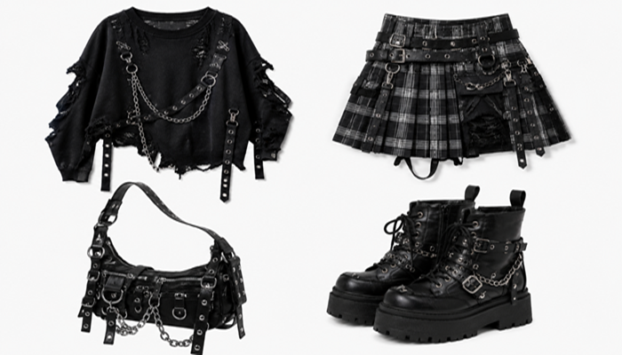
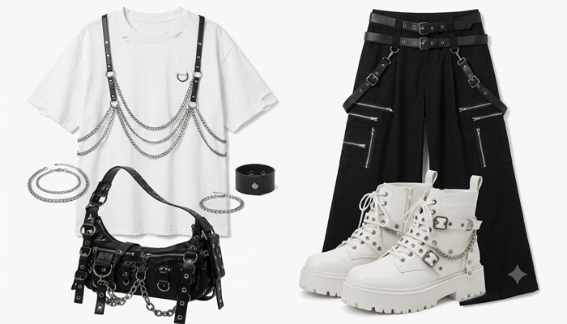
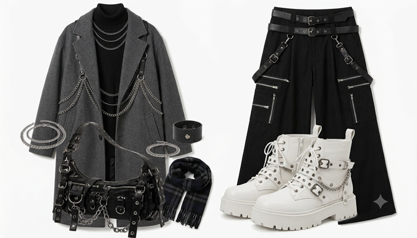

今日のコーデ
目次
春コーデ

春らしい軽めのニットとチェックスカートを組み合わせたコーデです。 オールブラックに合わせることで、落ち着いた雰囲気の中にもアクセントを加えています。
気温差のある季節なので、羽織りを一枚持っておくと便利です。
夏コーデ

白Tシャツとワイドパンツを組み合わせたシンプルなコーデです。 モノトーンでまとめることでパンクだけど大人っぽいを意識しました。
アクセサリーを加えることでシンプルすぎない印象になります。
冬コーデ

ロングコートとブーツを合わせた冬らしいコーデです。 インナーを黒でまとめることで全体に統一感を出しています。
マフラーやバッグなど小物を取り入れることで季節感も演出できます。